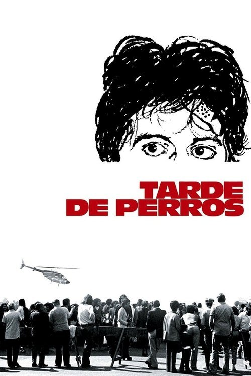

Tarde de perros (1975)
Sinopsis Rápida
¿Qué harías si un aparentemente simple robo a un banco se convierte en una crisis de rehenes llena de tensión, nerviosismo y dilemas morales?
Sinopsis Detallada
Tarde de perros sigue a Sonny, un hombre desesperado que planea un robo a un banco para pagar una operación para su hijo enfermo. Sin embargo, las cosas se complican rápidamente, y el robo se convierte en una tensa toma de rehenes. La película explora temas de desesperación, familia, y la fragilidad de la moral bajo presión. La dirección de Sidney Lumet crea una atmósfera claustrofóbica e intensa que te mantiene al borde de tu asiento. La actuación de Al Pacino es inolvidable, mostrando la vulnerabilidad y la tensión de un hombre en una situación límite.
¿Por qué tenés que verla?
- Una historia intensa y realista que te mantiene al borde del asiento.
- La brillante actuación de Al Pacino y la dirección magistral de Sidney Lumet.
- Su influencia en el cine de suspense y la representación de la desesperación humana.
- Un clásico del cine que explora las complejidades morales.
Idea Extra
Comparación de la película con eventos reales de robos a bancos y crisis de rehenes.
{{CONTENIDO_RELACIONADO}}